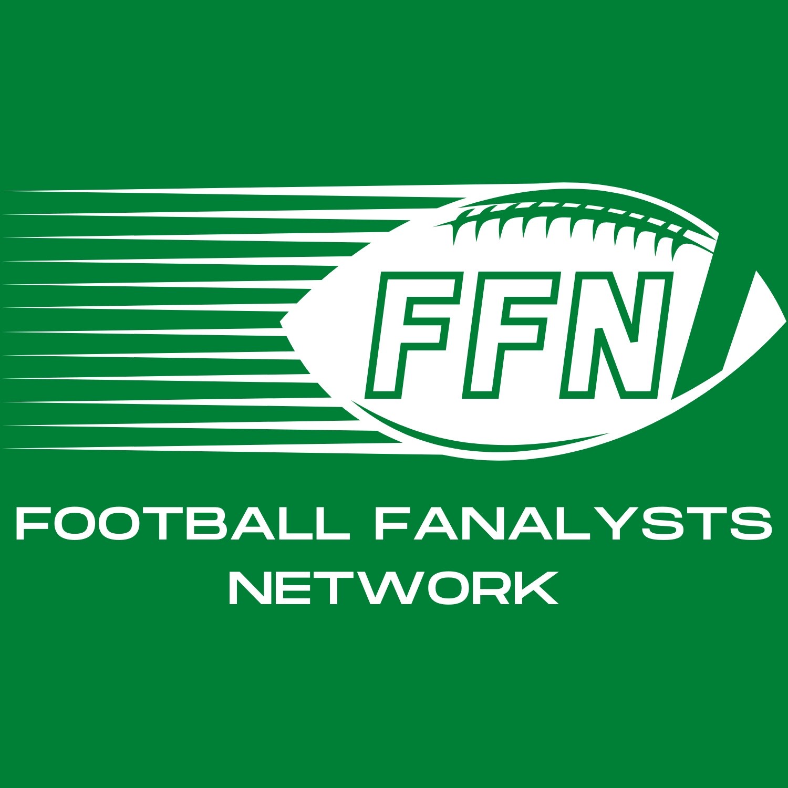

  <mat-toolbar color="primary">

    <mat-toolbar-row class="row-size">

      

      <ng-container *ngIf="isSmallScreen$ | async">
          <div class="icongroup">
           <a href="https://www.facebook.com/FootballFanalystsNetwork" target="_blank">
              
            </a>
            <a href="https://www.youtube.com/@FootballFanalystsNetwork" target="_blank">
              
            </a>
            <a href="https://www.tiktok.com/@footballfanalystsnetwork" target="_blank">
              
             </a>
            <a href="https://www.instagram.com/footballfanalystsnetwork/" target="_blank">
              
            </a>
              <li *ngIf="userIsAuthenticated">
                <a mat-button routerLink="/create" routerLinkActive="mat-accent">New Post</a> 
              </li>
              <!--<li *ngIf="!userIsAuthenticated">
                <a mat-button routerLink="/login" routerLinkActive="mat-accent">Login</a> 
              </li>
              <li *ngIf="!userIsAuthenticated">
                <a mat-button routerLink="/signup" routerLinkActive="mat-accent">Signup</a> 
              </li>-->
              <li *ngIf="userIsAuthenticated">
                <button mat-button (click)="onLogout()">Logout</button> 
              </li>
          </div>
        </ng-container>
      
        <ng-container *ngIf="isWideScreen$ | async">
        <button mat-icon-button class="dropdown"[matMenuTriggerFor]="belowMenu" aria-label="Example icon-button with a menu">
          <mat-icon>more_vert</mat-icon>
        </button>
        <mat-menu  #belowMenu="matMenu" yPosition="below">
          <button mat-menu-item class="dicon">
            <a href="https://www.facebook.com/FootballFanalystsNetwork" target="_blank">
              
            </a>
          </button>
          <button mat-menu-item class="dicon">
            <a href="https://www.youtube.com/@FootballFanalystsNetwork" target="_blank">
              
            </a>
          </button>
          <button mat-menu-item class="dicon">
            <a href="https://www.tiktok.com/@footballfanalystsnetwork" target="_blank">
              
             </a>
          </button>
          <button mat-menu-item class="dicon">
            <a href="https://www.instagram.com/footballfanalystsnetwork/" target="_blank">
              
            </a>
          </button>
        </mat-menu>
      </ng-container>
      </mat-toolbar-row>
  

    <mat-toolbar-row class="rowtwo">
    
            <div class="button-group" style="display:flex">
         
            <a mat-button class="button" routerLink="/letstalk"> Let's Talk</a> 
            <a mat-button class="button" routerLink="/draftg"> Draft Guide</a>
            <a mat-button class="button" routerLink="/merch"> Merch</a>
            </div>
       
    </mat-toolbar-row>
    

</mat-toolbar>

